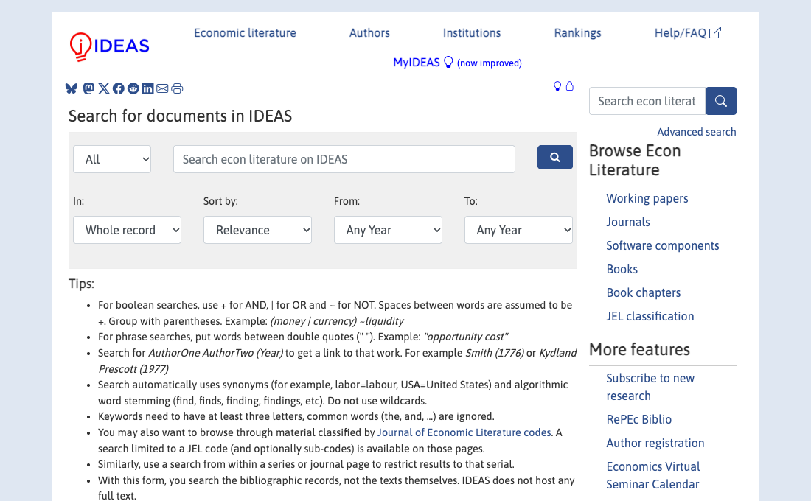

-
Translate your question into search terms
- Input
- “How does an immigration inflow affect local workers' wages?”
- Action
- Separate the event, outcome and setting. Add a synonym for each: immigration / refugees; wages / employment; local labour markets / cities.
- Output
- Two or three formulations, not one enormous query.
Also search the mechanism or method: for example, labour supply shocks or synthetic control immigration. Related work may use different words.
-
Choose a route, then cross-check another
Start with one service. Use another to check coverage or find a working-paper version; do not repeat an exhaustive search three times.
Broad discovery and citing papers
Open Google Scholar and try this specific query:
"Mariel boatlift" wages
Inspect Cited by, Related articles and All versions. Try a recent-year filter, but also keep foundational work. Library links or an author copy may provide access. Official help.
Economics records and paper versions
Open IDEAS/RePEc search. It searches bibliographic records, not full paper text. Try:
(immigration | refugee) + wages
Here
|means OR and+means AND. Open a record and inspect Other versions and download links. Syntax differs from other services. Search tips.Economics-focused indexing and subjects
Open Durham Library's A–Z databases, find EconLit and follow the university sign-in route. Use two advanced-search rows:
Row 1: immigration OR refugees AND Row 2: wages OR employment
Inspect subject terms in a useful record and reuse them. JEL subjects such as J61 (migration) and J31 (wages) offer another route; EconLit codes use an extra zero, such as J610. Platform controls vary. AEA search hints.
- Output
- One useful search and a cross-check through a second route.
Interface example: IDEAS search

Public search form, captured for this guide on 8 November 2026. Open the original. -
Check one starting paper
- Input
- A promising result, such as Card (1990).
- Action
- Open the source, confirm the title and version, and read the abstract. Ask: same question, same mechanism, same method, or just a similar topic?
- Output
- One seed paper with a reason for keeping it.
Example inclusion reason
“Same event and outcome as my starting question. This is a direct predecessor, not just background on migration.”
This is an interpretation of relevance, supported by Card's title and abstract, not a full assessment of the paper's identification.
-
Follow one link backwards and one forwards
- Input
- Your seed's reference list and citing papers.
- Action
- Check one cited predecessor and one later study. As teaching examples, inspect Borjas (2017) and Peri and Yasenov (2019). Record whether the connection concerns the question, sample, design or a conflicting finding.
- Output
- Connections you can describe, rather than a longer undifferentiated list.
These follow-ups are curated examples. They are not guaranteed to appear in a particular position in today's results.
-
Keep five candidates and a short log
- Input
- Your queries and shortlisted sources.
- Action
- Use the search-log template. Record the date, exact query, route, link, inclusion reason and reading depth. Note one plausible-looking exclusion too.
- Output
- Five papers whose discovery trail you can reconstruct.
What a log entry needs
Route: Scholar · Query: “Mariel boatlift” wages · Paper: Card (1990) · Link: article DOI · Reason: direct question · Read: abstract · Next: comparison-city construction. Add the actual search date; do not imply this example was a live search.
-
Apply the search to your own question
- Input
- Your proposal's current question, however provisional.
- Action
- Run a topic query and a mechanism or method query. Check another service, select five papers, and mark the two closest for deeper reading.
- Output
- A reading decision: what to read next, and what you need to learn from it.
Stop here
Read the two closest papers before expanding again. Few results do not prove novelty; many citations do not prove relevance.